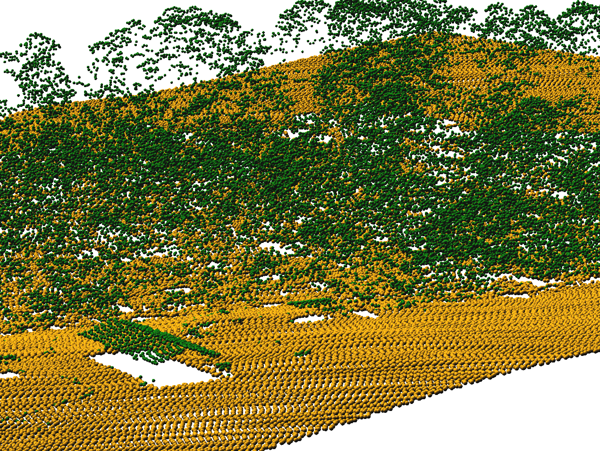

Efficient processing of point clouds with variable density
Point density for airborne lidar
Point density for ground-based lidar
Point density for UAV imagery SfM point cloud
Point density for Kinect point cloud
Decimation
decimation ~ thinning ~ sampling
makes the point cloud smaller, more manageable
may remove variations in point density
grid-based decimation ~ binning
Questions
Which decimation performs better for topography and micro-topography?
How this changes with the point cloud acquisition method?
Is the simplest decimations enough?
Or do we need to use slower but more sophisticated techniques?
How to derive maximum raster resolution for point cloud with variable density?
Is the resolution estimate for point cloud valid when density anomalies are present?
Influence of grid-based decimation resolution
grid size: 0.1 m → 0.3 m → 0.9 m → 1.5 m
(points removed: 0 % → 81 % → 98 % → 99 %)
Evaluating level of detail
Local relief model (LRM)
micro-topography, features other than trend
30-60cm wide, 30cm deep, 60m long gully (resolution 30cm)
Influence of grid-based decimation resolution
Local Relief Model
all points included
90% of points removed
Removing airborne lidar points
Removing ground-based lidar points
Removing UAV imagery SfM points
Published
Petras, V., A. Petrasova, J. Jeziorska, and H. Mitasova (2016). Processing UAV
and lidar point clouds in GRASS GIS. In: ISPRS-International Archives of the
Photogrammetry, Remote Sensing and Spatial Information Sciences, pp. 945–952
Planned publication
Efficient dense point cloud processing and correction
of density anomalies using decimations
Chapter 2
Mapping gradient fields of landform migration
Questions
How to represent landform changes in time?
How to communicate the temporal changes correctly?
How to interpolate the missing data in a time-series?
Space-Time Cube visualization
Contour evolution represented by isosurfaces
z = f (x,y,t) , z=16m and 20m
Simple experiment
Series of DEMs for tests created using Tangible Landscape
Contours, year 2001, z = 110m
Contours, year 2005, z = 110m
Contours, year 2008, z = 110m
Contours, year 2009, z = 110m
Define migration areas
Mask internal areas outside the range of 110m contour migration
Assign time [year] attribute
Each 110m contour is assigned a time [year] attribute
Interpolate temporal surface
Temporal surface is interpolated from a time series of 110m contours
Migration gradient field
Derived from spatio-temporal surface using derivatives of spline function
gradient lines over time and vectors over migration rates
Dynamic visualization of the gradient field
Shows spatial pattern of mass concentration and dispersal over time
Inspired by Tokyo Wind Speed application by Cameron Beccario.
Derived from air.js source code.
Uses HTML, CSS, JavaScript and D3.js library.
Real world data experiment
Gradient field of horizontal migration at z=12m for Jockey's Ridge dune
for years 1974, 1995, 2001, 2008, 2012, contour segmentation is needed
Gradient field and rate of migration
Migration of windward side of Jockey's Ridge dune at different elevations
Second order parameters
Temporal surface curvature:
in gradient direction: spread acceleration
in isoline direction: concentrating or dispersing spread
Generalization for complex dynamics
integrating the fields across several elevation contours
using implicit function f(x,y,t)=const to analyze countour evolution isosurface
derive 3D gradient lines of fastest change using trivariate splines
Conclusion
visual and quantitative technique
magnitude and direction of change
spatial distribution of rate of change
detection of anomalies
analysis of 3D monitoring data or model calibration
evolving shorelines and islands
disease spread
glacier melting
spatio-temporal interpolation of migrating landforms
depends only on GRASS GIS
(anybody can have what is needed)
GRASS GIS module (convenient to get, ready to use)
Published
Petras, V., H. Mitasova, and A. Petrasova (2015).
Mapping gradient fields of landform migration.
In: Geomorphometry for Geosciences. Ed. by Jasiewicz, J.,
Z. Zwolinski, H. Mitasova, and T. Hengl
[Best Paper Award at Geomorphometry 2015, 1062 PDF hits on March 6, 2017]
Planned publication
Description and interpolation of migrating landforms
using gradient fields based on spatio-temporal contours
Chapter 3
Lidar-based 3D fragmentation index
Point cloud

Questions
How to derive and describe 3D structure captured in lidar point clouds?
Is a 2D landscape index extensible and applicable to 3D vegetation structure?
Is 3D raster representation appropriate for lidar data analysis?
3D index of 3D raster
profile of 3D raster
point presence and index profiles
As 2D raster
Accepted with Minor Revisions
Petras, V., D. J. Newcomb, and H. Mitasova.
Generalized 3D fragmentation index derived from lidar point clouds.
In: Open Geospatial Data, Software and Standards
[submitted Dec 07, 2016, minor reviews Mar 9, 2017]
Chapter 4
A framework for open geospatial science
Reproducibility crisis
More than 70% of researchers have tried and failed to reproduce
another scientist's experiments, and more than half have failed
to reproduce their own experiments.
—Baker, Monya (2016).
1,500 scientists lift the lid on reproducibility.
Nature. 533 (7604): 452–454. doi:10.1038/533452a.
Motivation for open science
Software [...] developed as part of novel methods is as important
for the method's implementation [...]
Such software [...] must be made available to readers upon publication.
What happens when Wolfram Research goes out of business?
Does all of the mathematical research based on Mathematica disappear?
Will there be any way to reproduce the published results?
—Tim Daly, response to Ten reasons you must publish your code
The case of Macsyma/Symbolics
Macsyma (Project MAC’s SYmbolic MAnipulator) [...]
was originally developed from 1968 to 1982 at MIT's Project MAC.
In 1982, Macsyma was licensed to Symbolics and became a commercial product.
—Wikipedia contributors. "Macsyma." Wikipedia, The Free Encyclopedia. Wikipedia, The Free Encyclopedia, 17 Oct. 2016. Web. 14 Mar. 2017.
The case of Macsyma/Symbolics
Symbolics went bankrupt; Macsyma business was
continued by Macsyma Inc. [...] the company was sold [...]
new owner stopped Macsyma development [...]
All efforts spent on improving this branch of Macsyma
are irreversibly lost.
—Grozin, A. (2014). Introduction to MATHEMATICA for Physicists (p. 252). Springer.
The case of Macsyma/Symbolics
Fortunately, this was not the only branch.
[...]
Professor William Schelter
ported DOE Macsyma [1982 version] to Common Lisp
[...] and developed this version
until he died in 2001. This version was
called Maxima [...] under GPL
[...] is an active free software project [...]
—Grozin, A. (2014). Introduction to MATHEMATICA for Physicists (p. 252). Springer.
Latest release: December 2016 (last checked March 2017)
Open source
research uses software → open source
A step further
code/software created as part of research → open source
Too easy to delete a GitHub repository
[...] deleting a repository on GitHub takes only a few seconds
and can be done (accidentally or intentionally) by the user
who created the repository.
—Casey Bergman (2012). On the Preservation of Published Bioinformatics Code on GitHub
GitHub?
Thanks for the GitHub link… What does it do?
—Rachel Nabors (2016). Design is not a bug ticket. All Things Open 2016. Keynote
Software as part of research
based on open source
is open source
has stable place for code
is more than code
Software as part of research
What is good software to base research on?
What makes code open source?
What is a stable place for code?
How to share more than just code?
Posters
Petras, V. and Gebbert, S. (2014).
Testing framework for GRASS GIS: ensuring reproducibility of scientific geospatial computing.
In: AGU Fall Meeting
Abstracts. Vol. 1, p. 3758
Petras, V., Y. Chemin, M. Landa, T. Leppelt, P. Zambelli, L. Delucchi, M. Di
Leo, S. Gebbert, and M. Neteler (2017).
How innovations thrive in GRASS GIS.
NCGIS2017, Raleigh, NC, USA.
Also: Petras (2015) and Chemin (2015) at EGU
Planned publication
A framework for geospatial open science
as implemented in GRASS GIS,
a geospatial research platform
A framework for geospatial open science
What are the differences between software tool and research platform?
Who are the authors of significant additions to the code?
Are they the same as the maintainers of the code?
Are they the same as the original authors?
How much original research is in the software?
What is the ratio of original research code and implementations of existing methods?
What makes software and code suitable for research and for practitioners?
Appendix
Selected additional projects
Urban growth model – FUTURES
Disease spread model – SOD
Seamless desktop and remote computations
Tangible Landscape for QGIS
Course: Tools for open geospatial science
FUTURES PGA – before
configuration file based interface
FUTURES PGA – before
preprocessGISData.cpp
FUTURES PGA – after
GUI, command line, Python
FUTURES PGA – after
faster input/output, efficient memory usage
fixed memory management, edge cases
flexible inputs, interface
Sudden Oak Death Model
hardcoded parameters → GUI + CLI (GRASS GIS)
multiple stochastic runs which run in parallel (OpenMP)
Petras, V., A. Petrasova, B. Harmon, R. K. Meentemeyer, and H. Mitasova (2015).
Integrating free and open source solutions into geospatial science education.
In: ISPRS International Journal of Geo-Information 4.2, pp. 942–956
[1582 full-text views, MPDI on March 6, 2017]
Also:
Rocchini, D., V. Petras, A. Petrasova, N. Horning,
L. Furtkevicova, M. Neteler, B. Leutner, and M. Wegmann.
Open-access and open-source for remote sensing training in ecology and conservation
[submitted to Ecological Informatics, Jan 20, 2017]
Course Tools for open geospatial science
Collaborative writing of scientific papers (don't send around DOCX files)
Revision control systems and wiki technologies
QGIS + GRASS GIS
command line, remote access, Linux
Interactive notebooks
Publishing code as part of an open source project
Publishing data on web
Reproducible computational environments
Course Tools for open geospatial science
What it is
a course with research focus
a course with extension to industry
tools like Git are daily bread in many companies
What it is not
a course limited to geospatial topics
authoring, management, computer knowledge needed as well